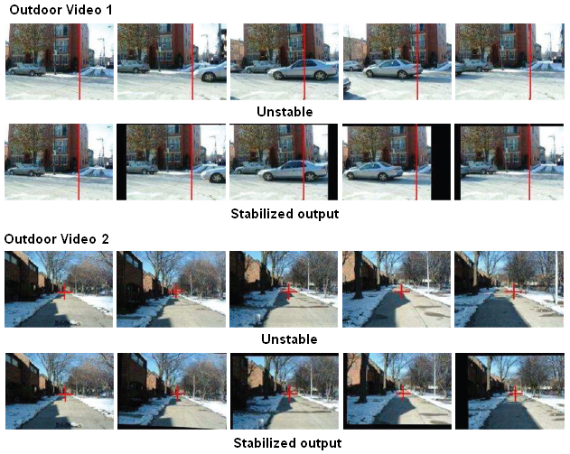
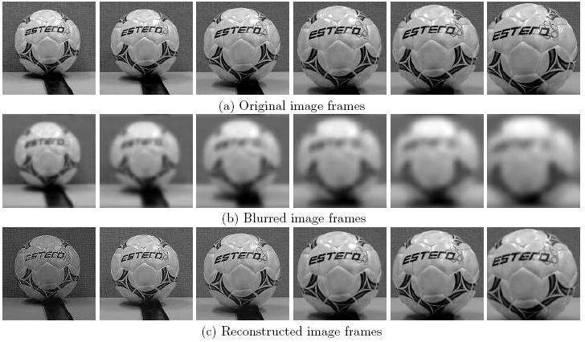

|
Junlan (Julia) Yang's webpage
Projects
Video Stabilization
Video stabilization based on Particle Filters
Video stabilization stands for the technique of correcting shaking/gittered videos taking by moving platforms such as unsteady hand, camera mounted on vehicles and etc.
My research on this topic concentrates on motion estimation, i.e., estimating the camera motion between adjacent frames based on the analysis of the images.
We design and implement a complete stabilization system including motion estimation, motion separation and motion compensation.
Our central idea is to extend particle filtering on object tracking to tracking of projected camera motion parameters.
We prove analytically and experimentally the scheme achieves robust and accurate performance.
We aslo explore efficient sampling scheme based on feature matching to reduce computational cost.

View Complete Demos and Comparisons Here
View Related Pulication Here (TCSVT09, ICIP06)
Video Virtual Focus
Virtual Focusing from Defocused Video Sequences
Virtual Focusing stands for the technique of Providing an image processing solution to recover focused image sequences from videos taken
by an out-of-focus camera with fixed physical parameters (cellphone cameras and webcams).
We approach the classic image processing problem with a computer vision perspective.
The technique can be used to deal with cameras with fixed lens by incorporating camera motion and imaging model.
We utilize multi-frame for estimation of the blur system and reconstruction of the focused image.
We also conduct additional studies on estimation of phase transfer function and noise analysis.

View Demos Here
View Related Pulication Here (TIP10, SPIE08, ICIP07)
|